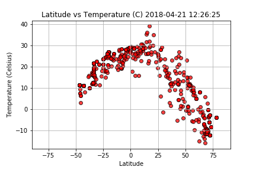

Ever wonder if it is warmer at the equator? People always say it is, but what does that graph look like?
No worries, there are people who have already done that work for you. Check out this graph.
Other factors to consider include
| Factor | Latitude Affect |
|---|---|
| Humidity | None |
| Cloudiness | None |
| Wind Speed | None |
OK, so maybe only temperature varies by distance from the equator.
Return to my bio.